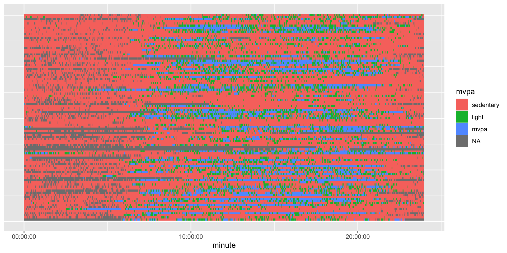
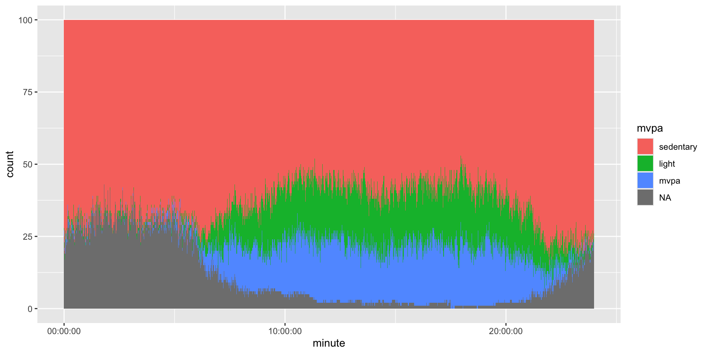
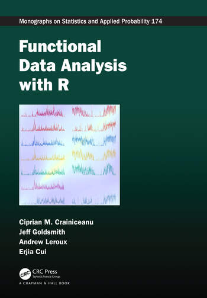

# A tibble: 6 × 1,443
SEQN PAXDAYM PAXDAYWM min_1 min_2 min_3 min_4 min_5 min_6 min_7 min_8 min_9
<dbl> <dbl> <dbl> <dbl> <dbl> <dbl> <dbl> <dbl> <dbl> <dbl> <dbl> <dbl>
1 73557 1 3 NA NA NA NA NA NA NA NA NA
2 73557 2 4 NA NA NA NA NA NA NA NA NA
3 73557 3 5 NA NA NA NA NA NA NA NA NA
4 73557 4 6 NA NA NA NA NA NA NA NA NA
5 73557 5 7 NA NA NA NA NA NA NA NA NA
6 73557 6 1 NA NA NA NA NA NA NA NA NA
# ℹ 1,431 more variables: min_10 <dbl>, min_11 <dbl>, min_12 <dbl>,
# min_13 <dbl>, min_14 <dbl>, min_15 <dbl>, min_16 <dbl>, min_17 <dbl>,
# min_18 <dbl>, min_19 <dbl>, min_20 <dbl>, min_21 <dbl>, min_22 <dbl>,
# min_23 <dbl>, min_24 <dbl>, min_25 <dbl>, min_26 <dbl>, min_27 <dbl>,
# min_28 <dbl>, min_29 <dbl>, min_30 <dbl>, min_31 <dbl>, min_32 <dbl>,
# min_33 <dbl>, min_34 <dbl>, min_35 <dbl>, min_36 <dbl>, min_37 <dbl>,
# min_38 <dbl>, min_39 <dbl>, min_40 <dbl>, min_41 <dbl>, min_42 <dbl>, …Module 4: Analysis and Summaries
Weekend Warrior
From Shiroma et al. (2019)
Within each MVPA category
- inactive: <37.5 minutes
- insufficiently active: 37.5-<150 minutes
- sufficiently active: ≥150 minutes per week
Weekend warriors: accrued ≥ 50% of their weekly MVPA on only one or two days, and “regularly active” participants who spread their activity over the entire week.
Population Data
Subset of 100 people, multiple days from NHANES AC data
Average Day per Person
We reshaped it so each time is a minute and then thresholded average minute (not really “correct”):
df = wide |>
pivot_longer(starts_with("min_"), names_prefix = "min_", names_to = "minute")
df = df |>
group_by(SEQN, minute) |>
summarise(value = mean(value, na.rm = TRUE)) |>
ungroup() |>
mutate(minute = as.numeric(minute) - 1,
minute = hms::hms(minutes = minute),
time = ymd_hms(paste0("2000-01-01", " ", as.character(minute)),
tz = "UTC"))# A tibble: 6 × 4
SEQN minute time value
<dbl> <time> <dttm> <dbl>
1 73557 00'00" 2000-01-01 00:00:00.000 NaN
2 73557 01'00" 2000-01-01 00:01:00.000 NaN
3 73557 02'00" 2000-01-01 00:02:00.000 NaN
4 73557 03'00" 2000-01-01 00:03:00.000 NaN
5 73557 04'00" 2000-01-01 00:04:00.000 NaN
6 73557 05'00" 2000-01-01 00:05:00.000 NaNPlotting Population
Plotting one row per person (100 people):

Lasagna Plot
Swihart et al. (2009) stacks the data into layers
Lasagna Plot

General Lasagna Function
geom_lasagna = function(data, x, ..., position = "stack") {
xvar = rlang::enquo(x)
x_string = rlang::as_label(xvar)
xvalues = data[[x_string]]
if (hms::is_hms(xvalues)) {
xvalues = as.numeric(xvalues)
}
res = ggplot2::resolution(xvalues)
data %>%
ggplot2::ggplot(aes(..., x = !!xvar)) +
ggplot2::geom_bar(position = position, width = res)
}Quantile Mapping
actiquantiles- Map your data into NHANES quantiles (and by age/sex)
id age sex measure value acti_pa_quantile
1 1 25 Female mims 15000 0.5349443
2 2 62 Male ssl_steps 7500 0.3527381Analysis
Mean Analysis
- Inclusion criteria per day
- Person inclusion by number of days
- Mean over days - one measure per person
- Standard statistical framework
FUI Analysis
- FUI - Fast univariate inference for longitudinal functional models Cui et al. (2022)
fastFMMpackage
- fit massively univariate pointwise mixed effects models
- apply a smoother along the functional domain
- obtain joint confidence bands (usually bootstrap)
FUI Analysis
FDA Packages
Function on Scalar Regression
Large generalized additive model (mgcv)
- y - scalar outcome
- functional effect for minute, by age, sex
fit <- bam(
y ~
s(minute, bs = "cc", k = 24) + # population mean 24-hour curve
s(minute, by = age_category, bs = "cc", k = 24) + # age effect varies over day
s(minute, by = sex, bs = "cc", k = 24) +# female–male difference over day
s(SEQN, bs = "re"), # participant random intercept
data = minute_data,
method = "fREML",
discrete = TRUE,
knots = list(minute = c(0.5, 1440.5))
)Survey Weighting
- Smirnova et al. (2024)
surveySoFR- scalar on function - Koffman et al. (2025)
svyfosr- function on scalar- FUI with
surveypackage
- FUI with
FDA Book
Functional Data Analysis with R

Modules
References
Cui, Erjia, Andrew Leroux, Ekaterina Smirnova, and Ciprian M Crainiceanu. 2022. “Fast Univariate Inference for Longitudinal Functional Models.” Journal of Computational and Graphical Statistics 31 (1): 219–30.
Koffman, Lily, Sunan Gao, Xinkai Zhou, Andrew Leroux, Ciprian Crainiceanu, and John Muschelli III. 2025. “Function on Scalar Regression with Complex Survey Designs.” arXiv Preprint arXiv:2511.05487.
Shiroma, Eric J, I-Min Lee, Mitchell A Schepps, Masamitsu Kamada, and Tamara B Harris. 2019. “Physical Activity Patterns and Mortality: The Weekend Warrior and Activity Bouts.” Medicine and Science in Sports and Exercise 51 (1): 35.
Smirnova, Ekaterina, Erjia Cui, Lucia Tabacu, and Andrew Leroux. 2024. “Scalar-on-Function Regression: Estimation and Inference Under Complex Survey Designs.” Statistics in Medicine 43 (23): 4559–74.
Swihart, Bruce, Brian Caffo, Bryan D James, Matthew Strand, Brian S Schwartz, and Naresh M Punjabi. 2009. Lasagna Plots: A Saucy Alternative to Spaghetti Plots.

Wearable-R: https://jhuwit.github.io/wearabler/